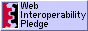

XDM
| xdm is not an extreme (or extendable) download manager! |
Hi! Welcome to xdm's web page.
xdm is a really good MDX compiler.
It focusses on two things:
a) Compiling the MDX syntax (markdown + JSX) to JavaScript,
b) Making it easier to use the MDX syntax in different places.
It boasts a couple of cool features, such as source maps, ESM only, defaulting
to an automatic JSX runtime, no Babel, smallish browser size, more docs,
import/exports in evaluate, esbuild and Rollup plugins.
To learn more about me, check out the GitHub page.
MDX looks something like this (input):
## Hello, world!
<div className="note">
> Some notable things in a block quote!
</div>
xdm turns that into (output):
/* @jsxRuntime automatic @jsxImportSource react */
import {Fragment as _Fragment, jsx as _jsx, jsxs as _jsxs} from 'react/jsx-runtime'
export default function MDXContent(props = {}) {
const {wrapper: MDXLayout} = props.components || ({});
return MDXLayout ? _jsx(MDXLayout, Object.assign({}, props, {
children: _jsx(_createMdxContent, {})
})) : _createMdxContent();
function _createMdxContent() {
const _components = Object.assign({
h2: "h2",
blockquote: "blockquote",
p: "p"
}, props.components);
return _jsxs(_Fragment, {
children: [_jsx(_components.h2, {
children: "Hello, world!"
}), "\n", _jsx("div", {
className: "note",
children: _jsxs(_components.blockquote, {
children: ["\n", _jsx(_components.p, {
children: "Some notable things in a block quote!"
}), "\n"]
})
})]
});
}
}
The code needed to turn input into output looks like this:
import {promises as fs} from 'node:fs'
import {compile} from 'xdm'
main()
async function main() {
const compiled = await compile(await fs.readFile('example.mdx'))
console.log(String(compiled))
}
|
| This site is optimized for
Lynx: low-resolution browsing for a low-resolution future!
|
|
| But any browser
should work fine here.
|
| 
|
This site subscribes to the Web Interoperability Pledge.
It is warranted free from frames, cookies, spawns, Java, Word, WAV, GIF,
and all other proprietary, predatory, or presumptuous influences.
|
wooorm.com
is a blink-free zone.
back to wooorm.com.
You are visitor number
 since 2-9-21
since 2-9-21
� 2021